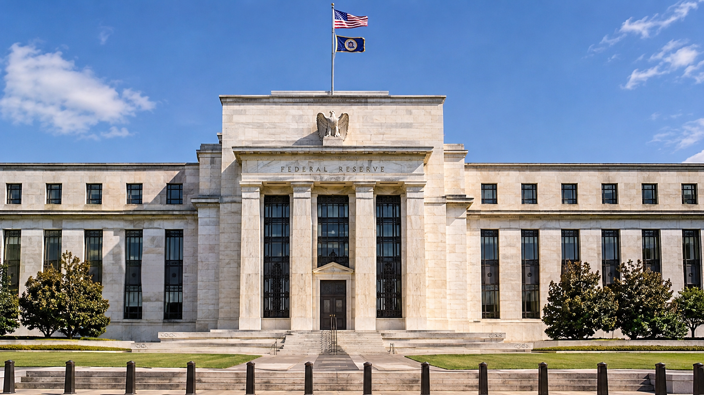

Terra Nova Development · Article #103
A New American Monetary System: Replacing the Federal Reserve with a National Central Bank

Download Article #103 as Word Document
Reclaiming Public Control of the Nation's Monetary System
Introduction
The United States needs to reconsider the structure and purpose of its monetary system. At the center of that discussion is the Federal Reserve, the institution responsible for managing monetary policy, influencing interest rates, supporting financial stability, and serving as the central bank of the United States.
Established in 1913, the Federal Reserve was created in response to recurring financial instability, bank failures, and the Panic of 1907. Its original purpose was to create a more dependable banking and monetary system capable of responding to the changing needs of a growing economy.
More than a century later, it is reasonable to ask whether the structure established in 1913 remains the most appropriate arrangement for the United States.
An alternative would be to replace the Federal Reserve System with a wholly public, federally chartered National Central Bank. Such an institution would retain the essential functions of a modern central bank while placing its ownership, governance, and ultimate accountability firmly within the public sphere.
Importantly, this proposal does not require eliminating private commercial banks. Banks could continue to compete, accept deposits, make loans, finance businesses, provide mortgages, and deliver financial services. What would change is the institution responsible for managing the nation's monetary system.
The objective would be to separate the public responsibility of managing the nation's money from the private business of banking.
1. Why Consider Replacing the Federal Reserve?
The Federal Reserve occupies an unusual position in the American financial system.
It was established by federal legislation, operates under congressional authority, and has a Board of Governors appointed by the President and confirmed by the Senate. However, its regional Federal Reserve Banks have a distinctive relationship with private member banks, which are required to subscribe to stock in their regional Reserve Banks.
These shares are not ordinary corporate stock. They cannot be freely traded, and they do not confer conventional ownership or control over national monetary policy. Nevertheless, member banks receive legally prescribed dividends.
This hybrid structure raises legitimate questions about institutional accountability, public oversight, and the relationship between government and the private financial industry.
The question is not whether private banks should exist. Private banking serves important economic purposes.
The question is whether the institution responsible for managing the nation's money should be organized as a hybrid system or as a fully public institution.
A National Central Bank would make the public character of monetary authority explicit.
2. Establishing a National Central Bank
Congress would establish a new National Central Bank through legislation, with a carefully designed transition from the existing Federal Reserve System.
The new institution would be federally owned, publicly accountable, and responsible for the monetary functions currently performed by the Federal Reserve.
Its responsibilities would include:
- Managing the national currency and monetary base.
- Conducting monetary policy.
- Influencing short-term interest rates.
- Managing the nation's monetary reserves.
- Acting as the federal government's fiscal agent and banker.
- Providing emergency liquidity to qualified financial institutions.
- Operating the nation's central payment and settlement infrastructure.
- Supporting financial stability.
- Coordinating with banking regulators to protect the integrity of the financial system.
The National Central Bank would not operate as an ordinary commercial bank. It would not compete with private banks for checking accounts, savings deposits, mortgages, or ordinary consumer loans.
Its purpose would be to maintain the monetary infrastructure upon which the entire American economy depends.
3. Private Commercial Banks Would Continue to Operate
One of the most important distinctions in this proposal is that replacing the Federal Reserve does not mean nationalizing the American banking industry.
Private commercial banks would remain privately owned and operated.
Institutions such as JPMorgan Chase, Bank of America, Wells Fargo, and thousands of smaller community banks and credit unions could continue their existing activities.
They would:
- Accept deposits.
- Make personal and business loans.
- Finance homes and commercial properties.
- Provide credit cards and payment services.
- Finance manufacturing, agriculture, construction, and infrastructure.
- Compete for customers and provide financial products.
The difference would be that these institutions would operate within a monetary system managed by a public National Central Bank.
Private banks would remain responsible for making commercial lending decisions and managing their businesses. The National Central Bank would be responsible for the monetary environment in which they operate.
This arrangement would preserve private enterprise while establishing public control over the nation's central monetary institution.
4. Money Creation and Monetary Policy
One of the most misunderstood aspects of modern banking is the creation of money.
Commercial banks create deposit money when they extend loans. For example, when a bank approves a mortgage, it generally creates a corresponding deposit in the borrower's account. Banks are constrained by capital requirements, liquidity requirements, regulation, creditworthiness, and the availability of funding.
The central bank influences the overall monetary and financial environment through its policy instruments.
A National Central Bank would inherit these responsibilities.
It would have the authority to:
- Adjust monetary policy in response to inflation and economic conditions.
- Influence the cost of borrowing.
- Manage the supply of central bank reserves.
- Purchase or sell government securities.
- Provide liquidity during financial emergencies.
- Support orderly operation of the payment system.
A public central bank would not necessarily eliminate private bank money creation. Rather, it would establish a public institution responsible for managing the monetary framework within which that creation occurs.
An important question for Congress would be whether the new bank should retain the existing framework of monetary policy or gradually introduce a different system.
Any changes to money creation would need to be carefully evaluated for their effects on inflation, employment, credit availability, and economic growth.
5. Who Would Benefit Financially?
Under the existing Federal Reserve structure, member banks receive prescribed dividends on their required capital subscriptions.
The Federal Reserve also generates income, primarily from its financial assets. After expenses, interest costs, and other obligations, excess earnings are generally transferred to the U.S. Treasury. These remittances have been affected by the Federal Reserve's accumulated losses in recent years.
Under a publicly owned National Central Bank, there would be no private member-bank shareholders receiving dividends.
The institution's financial structure could be designed so that any distributable net earnings would accrue to the federal government.
This would not mean that the government could simply print money to finance unlimited spending. Monetary expansion would still have economic consequences, including inflationary risks.
Nor would the elimination of bank dividends produce enormous guaranteed savings. The financial benefits would depend on the new institution's capital requirements, operating costs, interest expenses, and monetary policies.
The important principle would be that the financial benefits of public monetary authority would accrue to the public rather than being distributed through a private shareholder structure.
6. Independence from Political Interference
A public National Central Bank would need an important safeguard: independence in its day-to-day monetary policy decisions.
Government ownership does not necessarily mean that elected politicians should determine interest rates or direct the creation of money to finance their preferred programs.
In fact, excessive political interference could undermine the credibility of the monetary system.
Congress should establish a clearly defined mandate, perhaps including:
- Maintaining price stability.
- Supporting sustainable employment.
- Preserving financial stability.
- Protecting the integrity of the national currency.
The bank's leadership could be appointed through a transparent process involving presidential nominations and Senate confirmation.
Terms of office should be staggered, and monetary policy decisions should be subject to public reporting, independent audits, congressional oversight, and regular testimony.
The institution would be publicly owned but operationally independent.
This distinction is essential. Public ownership should create public accountability, not political control over every monetary decision.
7. Lessons from American History
The United States has previously experimented with nationally chartered central banking institutions.
The First Bank of the United States operated from 1791 to 1811. The Second Bank operated from 1816 to 1836.
Both performed important government banking and monetary functions. Both also generated political controversy concerning the concentration of financial power.
After the Second Bank's charter expired, the United States went without a central bank for decades.
That period included significant banking instability, financial panics, and economic disruptions. The Panic of 1907 eventually helped generate the political support necessary to establish the Federal Reserve in 1913.
These historical experiences demonstrate that eliminating a central bank without establishing an effective replacement can create serious problems.
They also demonstrate that the structure and governance of a national monetary institution have long been subjects of legitimate American debate.
The proposed National Central Bank would need to incorporate the lessons of both earlier national banks and the modern Federal Reserve.
8. Implementing the Transition
Replacing the Federal Reserve would be a major undertaking. It could not responsibly happen overnight.
Congress would need to enact legislation establishing the new institution and specifying how its responsibilities would transfer.
A reasonable transition might include the following stages:
Stage One: Establish the National Central Bank
Congress creates the institution, defines its responsibilities, establishes its governance, and provides its initial capital.
Stage Two: Transfer Monetary Operations
The new institution assumes responsibility for monetary policy, currency issuance, reserve management, payment settlement, and the government's central banking functions.
Stage Three: Transfer Financial Assets and Liabilities
Existing Federal Reserve assets, liabilities, reserve balances, currency obligations, and contractual commitments would need to be transferred or otherwise settled under carefully defined legislation.
This would include determining how existing Treasury securities and other financial holdings would be handled.
Stage Four: Preserve Banking Stability
Commercial banks would retain access to payment systems, settlement services, and appropriate liquidity facilities throughout the transition.
Deposit insurance through the Federal Deposit Insurance Corporation would remain a separate public function unless Congress decided otherwise.
Stage Five: Complete the Institutional Transition
Once all responsibilities had been transferred and the new institution was fully operational, Congress could terminate the Federal Reserve System under the terms established by the transition legislation.
There should be no interruption in the banking system, access to deposits, payment processing, or the operation of financial markets.
9. Potential Advantages and Challenges
The proposed system offers several potential advantages:
Public accountability: The central monetary institution would be directly owned by the federal government and accountable to the American people through their elected representatives.
Elimination of private member-bank dividends: The new institution would not have a private member-bank shareholder structure.
Clearer institutional responsibility: Monetary authority would be consolidated within an explicitly public institution.
Preservation of private enterprise: Commercial banks would continue to compete, lend, and provide financial services.
Greater transparency: Congress could establish stronger reporting and disclosure requirements.
However, there are also significant challenges.
Political interference could undermine monetary policy independence. Poorly designed monetary expansion could produce inflation. A centralized institution could become bureaucratic or insufficiently responsive to regional economic conditions.
The transition itself would involve complicated legal, financial, accounting, and operational issues.
These risks are not reasons to dismiss the proposal. They are reasons to design it carefully.
The new institution would need strong safeguards against both private financial influence and excessive political interference.
Conclusion: Public Money, Private Enterprise
The purpose of replacing the Federal Reserve with a National Central Bank would not be to eliminate capitalism, abolish private banking, or place every financial transaction under government control.
It would be to establish a clearer distinction between two important economic functions.
The first is the public responsibility of managing the nation's monetary system.
The second is the private responsibility of providing competitive banking and financial services.
These functions do not have to be controlled by the same institutional structure.
A publicly owned National Central Bank could manage the national currency, monetary policy, reserves, and financial infrastructure while private banks continued to finance businesses, families, homes, agriculture, and economic development.
Such a system would preserve the benefits of private enterprise while placing the central monetary institution under public ownership and accountability.
Ultimately, the question Americans should consider is not whether government or private enterprise should control the entire financial system.
It is whether the authority responsible for managing the nation's money should operate primarily as a public institution, with its responsibilities and benefits clearly directed toward the public interest.
Money is the foundation of the American economy. Its management is too important to leave questions of public accountability unanswered.
Sources and further reading
The essay draws on the following historical and institutional sources:
- Library of Congress – Creating a Central Bank (https://guides.loc.gov/banking-history/central-bank?utm_source=chatgpt.com)
- Federal Reserve History – Before the Fed (https://www.federalreservehistory.org/essays/before-the-fed?utm_source=chatgpt.com)
- Federal Reserve – Balance Sheet and Financial Structure (https://www.federalreserve.gov/aboutthefed/chapter-1-balance-sheet.htm?utm_source=chatgpt.com)
- Federal Reserve – Combined Financial Statements, 2025 (https://www.federalreserve.gov/aboutthefed/files/combinedfinstmt2025.pdf?utm_source=chatgpt.com)
One important consideration for developing this proposal further: The new National Central Bank should have a charter that explicitly prohibits using its monetary authority to provide preferential treatment to particular private financial institutions. Emergency lending should be governed by transparent, consistently applied rules.
That would make the proposal about more than changing the name and ownership of the central bank. It would be an opportunity to redesign the relationship between public monetary authority and private enterprise.